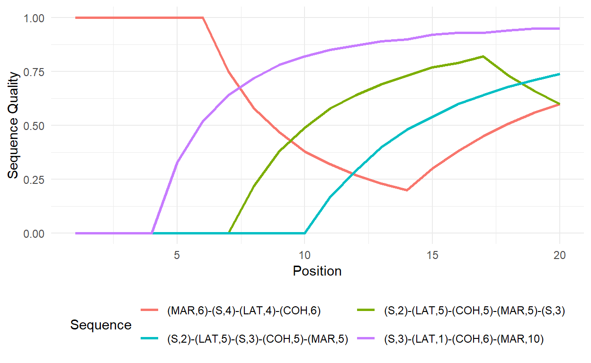

Assessing sequence complexity and quality
The chapter starts with two tiny sequences that were constructed to illustrate differences between counting the number of transitions and the number of subsequences. The sequence data are constructed with the following code:
seqX <- c("S","LAT","COH","MAR")
seqY <- c("S","LAT","COH","S")
ex1.seq <- seqdef(rbind(seqX,seqY), alphabet = seqX)The number of transitions can be obtained with the seqtransn function, the number of distinct subsequences is computed with seqsubsn. Both functions are part of the TraMineR package..
# Number of transitions
seqtransn(ex1.seq)
Trans.
seqX 3
seqY 3
# Number of subsequences
seqsubsn(ex1.seq)
Subseq.
seqX 16
seqY 15In Table 2-9 we show all distinct subsequences extracted from Sequence x (seqx). The subsequences can be extracted by using the combn function. The functions extracts only subsequences of given length each time it is executed. In the following loop we specify rev(seq_along(seqX)) to extract subsequences of length 4 to 1. The extracted subsequences are stored as data.frames in the resulting list subseqs. In the next step, we put all these subsequences into one data frame using bind_rows(subseqs). Then we remove all duplicates using distinct and add an empty row for the empty subsequence \(\lambda\). The resulting dataset can be nicely printed in the console with print(seqdef(subseqs), format = "SPS").
# Extract & display all possible subsequences of Sequence x
subseqs <- vector(mode = "list", length = length(seqX))
for (i in rev(seq_along(seqX))) {
subseqs[[i]] <- as.data.frame(t(combn(seqX, i)))
}
# Store all distinct subsequences in one dataset
subseqs <- bind_rows(subseqs)
subseqs <- distinct(subseqs)
#Add and fill empty row
subseqs <- add_row(subseqs, .before = 1)
subseqs[1,1] <- "-"
#Print subsequences
seqdss(seqdef(subseqs))
Sequence
1 -
2 S
3 LAT
4 COH
5 MAR
6 S-LAT
7 S-COH
8 S-MAR
9 LAT-COH
10 LAT-MAR
11 COH-MAR
12 S-LAT-COH
13 S-LAT-MAR
14 S-COH-MAR
15 LAT-COH-MAR
16 S-LAT-COH-MARNormalizing the two sequencing indicators eases the comparison between sequences. The number of transitions can be normalized by adding the argument norm = TRUE when executing seqtransn. The normalization of the number of subsequences is done manually. Following ELzinga`s recommendation we use the \(\log_2\phi\) instead of total number of subsequences (\(\phi\)) as our starting point. This number is related to it’s theroetical maximum \(\log_2\phi_{max}\). The maximum number of subsequences can be extracted from a hypothetical sequence that repeats the states of the alphabet up to the length of thelongest sequence in the currently examined data. In our example this sequence is constructed by:
seqsubsn.max <- rep(alphabet(ex1.seq),
length.out = max(seqlength(ex1.seq)))
seqsubsn.max
[1] "S" "LAT" "COH" "MAR"The resulting sequence is identical with sequence x. Accordingly, the normalized value for this sequence should equal 1. The following two commands produce the normalized scores for our two sequence. The first command defines the object extracted in the previous step as a sequence object (seqdef(t(seqsubsn.max))) and extracts the number of subsequences with seqsubsn. The second command computes the normalized values for our two example sequences according to \(\frac{log_2 \phi - 1}{\log_2\phi_{max} - 1}\).
# normalized number of transitions
seqtransn(ex1.seq, norm = TRUE)
Trans.
seqX 1
seqY 1
# normalized number of subsequences (log2)
seqsubsn.max <- seqsubsn(seqdef(t(seqsubsn.max)))
round((log2(seqsubsn(ex1.seq))-1)/
(log2(rep(seqsubsn.max,nrow(ex1.seq)))-1),2)
Subseq.
seqX 1.00
seqY 0.97The example sequences from the book can be created with the following code:
seqX2 <- rep(c("S","LAT","COH","MAR"),2)
seqY2 <- rep(c("S","LAT","COH","MAR"),c(2,2,2,2))
ex2.seq <- seqdef(rbind(seqX2,seqY2),
alphabet = c("S","LAT","COH","MAR"))The normalized longitudinal entropies are computed with:
seqient(ex2.seq)
Entropy
seqX2 1
seqY2 1Both sequences have an entropy values of 1, the maximum. They differ, however, in terms of sequencing:
# normalized number of transitions
seqtransn(ex2.seq, norm = TRUE)
Trans.
seqX2 1.0000000
seqY2 0.4285714
# normalized number of subsequences (log2)
seqsubsn.max <- rep(alphabet(ex2.seq),
length.out = max(seqlength(ex2.seq)))
seqsubsn.max <- seqsubsn(seqdef(t(seqsubsn.max)))
round((log2(seqsubsn(ex2.seq))-1)/
(log2(rep(seqsubsn.max,nrow(ex2.seq)))-1),2)
Subseq.
seqX2 1.00
seqY2 0.44For this section we generate an example dataset comprising 12 sequences of length 20:
data <- matrix(c(rep("S", 20),
rep("MAR", 20),
c(rep("MAR", 5)), rep("COH", 5), rep("LAT", 5), rep("S", 5),
c(rep("S", 5), rep("LAT", 5), rep("COH", 5), rep("MAR", 5)),
c(rep("S", 3), rep("LAT", 1), rep("COH", 6), rep("MAR", 10)),
c(rep("S", 4), rep("LAT", 4), rep("COH", 6), rep("MAR", 6)),
c(rep("MAR", 6), rep("S", 4), rep("LAT", 4), rep("COH", 6)),
c(rep("S", 10), rep("MAR", 10)),
c(rep("S", 2), rep("LAT", 5), rep("S", 3), rep("COH", 5), rep("MAR", 5)),
c(rep("S", 2), rep("LAT", 5), rep("COH", 5), rep("MAR", 5), rep("S", 3)),
c(rep("S", 2), rep("MAR", 10), rep("COH", 8)),
c(rep("S", 2), rep("MAR", 2), rep("COH", 8), rep("MAR", 8))), nrow = 12, byrow = TRUE)
example.seq <- seqdef(data, alphabet = c("S","LAT","COH","MAR"))
example.sps <- print(example.seq, format = "SPS")
Sequence
[1] (S,20)
[2] (MAR,20)
[3] (MAR,5)-(COH,5)-(LAT,5)-(S,5)
[4] (S,5)-(LAT,5)-(COH,5)-(MAR,5)
[5] (S,3)-(LAT,1)-(COH,6)-(MAR,10)
[6] (S,4)-(LAT,4)-(COH,6)-(MAR,6)
[7] (MAR,6)-(S,4)-(LAT,4)-(COH,6)
[8] (S,10)-(MAR,10)
[9] (S,2)-(LAT,5)-(S,3)-(COH,5)-(MAR,5)
[10] (S,2)-(LAT,5)-(COH,5)-(MAR,5)-(S,3)
[11] (S,2)-(MAR,10)-(COH,8)
[12] (S,2)-(MAR,2)-(COH,8)-(MAR,8) Table 2-10 in the book presents several unidimensional and composite measures for these sequences. With the exception of the quality index proposed by Manzoni and Mooi-Reci (2018) all of these indices can be easily computed using the respective TraMineR functions. The precarity index suggested by Ritschard et al. (2018) requires to specify a qualitative hierarchy of states. For demonstration purposes we take a traditionalist’s perspective and impose the folowing hierarchy of partnership states \(\text{MAR} > \text{COH} > \text{LAT} > \text{S}\), i.e. the elements of the alphabet in reversed order. Accordingly, we specify the state.order argument as rev(alphabet(example.seq)).
# Number of transitions
transitions.norm <- round(seqtransn(example.seq, norm = TRUE),2)
# Within sequence entropies
entropy <- seqient(example.seq)
# Turbulence
turbulence <- seqST(example.seq, norm = TRUE)
# Complexity
complexity <- seqici(example.seq)
#Precarity index
precarity <- seqprecarity(example.seq,
state.order = rev(alphabet(example.seq)))We wrote a little function to implement the sequence quality index
\[ \frac{\sum_{i=1}^{k}{p^{w}_{i}}}{\sum_{i=1}^{k}{i^{w }_{i}}}, \quad \text{with} \quad p_i = \begin{cases} i & \text{if } x_i=S \\ 0 & \text{otherwise} \end{cases} \]
where \(i\) indicates the position within the sequence, \(x_i=S\) denotes a successful state at position \(i\), and \(w\) is a weighting factor simultaneously affecting the impact size of failures, but also the strength and pace of recovery due to subsequent successes.
Our function seqsuccess allows to obtain the quality index for multiple weighting factors simultaneously.
You can download the function here: seqsuccess.R. You can use it in R once you added it to your current environment by typing:
source("seqsuccess.R")In the example code below we specify - from a traditionalist’s point of view - marriage as the state of success using three different weights. We also generate an object containing the quality index for the default weight of one exclusively, which later will be used for creating Table 2-10.
seqsuccess(example.seq,
success = "MAR",
weight = c(.5,1,2))
w=0.5 w=1 w=2
[1,] 0.00 0.00 0.00
[2,] 1.00 1.00 1.00
[3,] 0.14 0.07 0.02
[4,] 0.34 0.43 0.57
[5,] 0.64 0.74 0.87
[6,] 0.41 0.50 0.65
[7,] 0.18 0.10 0.03
[8,] 0.64 0.74 0.87
[9,] 0.34 0.43 0.57
[10,] 0.31 0.36 0.40
[11,] 0.44 0.36 0.22
[12,] 0.59 0.66 0.78
quality <- seqsuccess(example.seq,
success = "MAR")If only a single weight is specified, it is also possible to caluclate a time-varying version of the quality index (time.varying = TRUE) for each sequence position \(i\), which can be used as a variable in panel regressions (see Manzoni and Mooi-Reci (2018) for an application). Futhermore, multiple states of the alphabet can be jointly defined as success either by providing their numeric values or labels. In the example below, we specify marriage and cohabitation as success.
seqsuccess(example.seq,
success = c("COH", "MAR"), # also possible: c(3,4)
time.varying = TRUE)Reshaping the data to long format and some data cleaning allow to visualize how the sequences develop over time. In the example below this is done for a selection of four sequences.
# Preparing the data for ggplot (-> long format)
fig.data <- success.tvar %>%
mutate(id = row_number(),
Sequence = example.sps) %>%
pivot_longer(cols =-c("id", "Sequence"),
names_to = "Position",
values_to = "Sequence Quality") %>%
mutate(Position = as.numeric(substring(Position, first = 3)))
# Plot the development of the sequence quality index
fig.data %>%
filter(id %in% c(5,7,9,10)) %>%
ggplot(aes(x = Position,
y = `Sequence Quality`,
color = Sequence)) +
geom_line(size=1) +
theme_minimal() +
theme(legend.position="bottom") +
guides(col=guide_legend(nrow=2,byrow=TRUE)) 
#theme(legend.title = element_text(face = "bold", hjust = .5),
# legend.text = element_text(size = 6))Once we have stored the quality index and the other indices in one object, we can display them as a comprehenisve table (Table 2-10 in the book).
# Save indices as data frame
tab2.10 <- data.frame(example.sps,
Transitions = as.vector(transitions.norm),
entropy,
turbulence,
Complexity = as.vector(complexity),
Precarity = as.vector(precarity),
Quality = as.vector(quality))
# Generate table
kable(tab2.10, digits = 2) %>%
kable_styling(bootstrap_options = c("responsive", "hover", "condensed"),
full_width = F) %>%
scroll_box(width = "100%")| Sequence | Transitions | Entropy | Turbulence | Complexity | Precarity | Quality | |
|---|---|---|---|---|---|---|---|
| [1] | (S,20) | 0.00 | 0.00 | 0.00 | 0.00 | 0.20 | 0.00 |
| [2] | (MAR,20) | 0.00 | 0.00 | 0.00 | 0.00 | 0.00 | 1.00 |
| [3] | (MAR,5)-(COH,5)-(LAT,5)-(S,5) | 0.16 | 1.00 | 0.47 | 0.40 | 0.73 | 0.07 |
| [4] | (S,5)-(LAT,5)-(COH,5)-(MAR,5) | 0.16 | 1.00 | 0.47 | 0.40 | 0.20 | 0.43 |
| [5] | (S,3)-(LAT,1)-(COH,6)-(MAR,10) | 0.16 | 0.82 | 0.27 | 0.36 | 0.20 | 0.74 |
| [6] | (S,4)-(LAT,4)-(COH,6)-(MAR,6) | 0.16 | 0.99 | 0.42 | 0.39 | 0.20 | 0.50 |
| [7] | (MAR,6)-(S,4)-(LAT,4)-(COH,6) | 0.16 | 0.99 | 0.42 | 0.39 | 0.29 | 0.10 |
| [8] | (S,10)-(MAR,10) | 0.05 | 0.50 | 0.40 | 0.16 | 0.20 | 0.74 |
| [9] | (S,2)-(LAT,5)-(S,3)-(COH,5)-(MAR,5) | 0.21 | 1.00 | 0.42 | 0.46 | 0.42 | 0.43 |
| [10] | (S,2)-(LAT,5)-(COH,5)-(MAR,5)-(S,3) | 0.21 | 1.00 | 0.43 | 0.46 | 0.50 | 0.36 |
| [11] | (S,2)-(MAR,10)-(COH,8) | 0.11 | 0.68 | 0.24 | 0.27 | 0.35 | 0.36 |
| [12] | (S,2)-(MAR,2)-(COH,8)-(MAR,8) | 0.16 | 0.68 | 0.28 | 0.33 | 0.35 | 0.66 |
We also illustrate how the indices could be used in regression analysis. Note that the aim of this exercise is not to build a good statistical model but to showcase how to work with the index scores obtained in SA.
In the following code we generate a dataset containing the respondent’S gender (sex), level of education (highschool), and migration background (migstatus) using the pairfam example data rather than constructed sequences. The data are stored in family and the sequences combining partnership states and fertility have been saved in the sequence object partner.child.year.seq.
regdata <- family %>%
select(sex, highschool, migstatus) %>%
mutate(Complexity = as.numeric(seqici(partner.child.year.seq)),
Turbulence = as.numeric(seqST(partner.child.year.seq, norm = TRUE))) %>%
filter(migstatus != -7) %>% # Exclude missings
mutate(migstatus = as_factor(migstatus))
# Regression analysis with Turbulence and Complexity as DV
lm.turbulence <- lm(Turbulence ~ sex + highschool + migstatus, data = regdata)
lm.complexity <- lm(Complexity ~ sex + highschool + migstatus, data = regdata)
tab_model(lm.turbulence,lm.complexity, show.ci = FALSE,
pred.labels = c("Intercept", "Gender: female",
"Education: at least high school",
"Migration background: 1st generation",
"2nd generation"), p.style="a", file="output.html")| Turbulence | Complexity | |
|---|---|---|
| Predictors | Estimates | Estimates |
| Intercept | 0.29 *** | 0.32 *** |
| Gender: female | -0.01 ** | -0.01 |
| Education: at least high school | 0.04 *** | 0.04 *** |
| Migration background: 1st generation | -0.04 *** | -0.04 *** |
| 2nd generation | 0.01 | 0.01 |
| Observations | 1809 | 1809 |
| R2 / R2 adjusted | 0.062 / 0.060 | 0.046 / 0.044 |
|
||
Finally, the chapter mentions the correlation betwen turbulence and complexity for the small example data as well as for the pairfam sample. The two correlations can be obtained by
# Correlation in the toy dataset with 12 sequences
cor(complexity,turbulence)
Turbulence
C 0.8661277
# Computing the indices for the pairfam data
complexity2 <- seqici(partner.year.seq)
turbulence2 <- seqST(partner.year.seq, norm = TRUE)
# Print the correlation
cor(complexity2,turbulence2)
Turbulence
C 0.894251The original sequence quality index presented above is constructed using a binary framework that distinguishes only between success and failure. Drawing from the conceptualization of the precarity index, we suggest a generalized version of the sequence quality index that allows for a more nuanced quality hierarchy of states:
\[ \frac{\sum_{i=1}^{k}{qp^{w}_{i}}}{\sum_{i=1}^{k}{q_{max}i^{w }_{i}}}, \quad \text{with} \quad p_i = \begin{cases} i & \text{if } x_i=S \\ 0 & \text{otherwise} \end{cases} \] The vector \(q\) is defined to indicate the quality of a state. The quality vector assigns values between 0 and 1 to every state of the alphabet. If not specified differently, the state at the bottom of the quality hierarchy is coded 0, whereas the state on the top is coded 1. For the states in-between each step up the hierarchy increases the value on the vector by \(1/(l(A) - 1)\), with \(l(A)\) indicating the length of the alphabet.
For illustrative purposes, we again take a traditionalist’s perspective and impose the following rank order: \(S < LAT < COH < MAR\). This translates to a quality vector \(q=(0,\frac{1}{3},\frac{2}{3},1)\) for the four states of our alphabet. In the following table we compare the values of the generalized sequence quality index with the binary sequence quality index (in which only MAR is considered as success).
| Sequence | Original | Generalized |
|---|---|---|
| (S,5) | 0.00 | 0.00 |
| (S,2)-(COH,2)-(MAR,1) | 0.33 | 0.64 |
| (S,1)-(LAT,1)-(COH,1)-(MAR,2) | 0.60 | 0.78 |
| (S,2)-(LAT,1)-(MAR,1)-(LAT,1) | 0.27 | 0.44 |
| (S,1)-(COH,1)-(MAR,1)-(S,1)-(COH,1) | 0.20 | 0.51 |
| (S,1)-(COH,1)-(MAR,1)-(S,2) | 0.20 | 0.29 |
The generalized index allows to obtain more fine-grained results than the original quality index, but requires more analytical choices, i.e. the definition of a state hierarchy which assigns metric weights to each state. The function for the generalized sequence quality index will be (written and) uploaded soon.
Manzoni, A., & Mooi-Reci, I. (2018). Measuring Sequence Quality. In G. Ritschard & M. Studer (Eds.), Sequence Analysis and Related Approaches (pp. 261–278). doi: 10.1007/978-3-319-95420-2_15
Ritschard, G., Bussi, M., & O’Reilly, J. (2018). An Index of Precarity for Measuring Early Employment Insecurity. In G. Ritschard & M. Studer (Eds.), Sequence Analysis and Related Approaches (pp. 279–295). doi: 10.1007/978-3-319-95420-2_16
If you see mistakes or want to suggest changes, please create an issue on the source repository.
Text and figures are licensed under Creative Commons Attribution CC BY-NC 4.0. Source code is available at https://github.com/sa-book/companion, unless otherwise noted. The figures that have been reused from other sources don't fall under this license and can be recognized by a note in their caption: "Figure from ...".